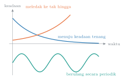
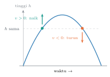
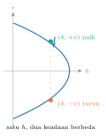
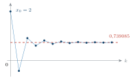
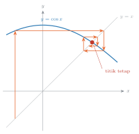
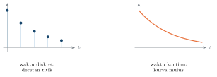
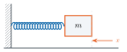
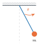
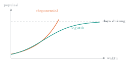
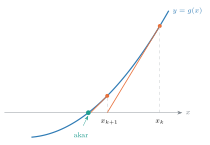

Pengantar Sistem Dinamik · Pertemuan 1
Vektor keadaan, waktu diskret, dan waktu kontinu
Dr. Mohammad Jamhuri · Program Studi Matematika
Geser ke samping atau tekan panah untuk berpindah slide
Pertemuan lalu kita baru membicarakan kontrak perkuliahan: apa yang akan kita pelajari, dan bagaimana Anda dinilai.
Hari ini kita masuk ke isinya. Saya ingin memulai dari satu pertanyaan yang bunyinya sangat sederhana.
Kalau saya tahu aturan yang menerangkan bagaimana sesuatu berubah, apa yang terjadi pada benda itu dalam jangka panjang?
Perhatikan baik-baik bunyinya. Saya tidak bertanya berapa nilainya pada detik ke-7,3.
Pertanyaan kita justru lebih besar dari itu. Kita ingin tahu nasib sistem itu, bukan satu angka pada satu saat.

Sepanjang semester ini, tiga pola berikut akan kita jumpai berulang kali.
Ada sistem yang mengendap. Nilainya bergerak menuju satu keadaan tenang, lalu berhenti di situ selamanya.
Ada yang berulang. Naik dan turun dengan pola yang sama persis, tanpa pernah mengendap.
Ada yang meledak. Nilainya membesar tanpa batas, dan model itu biasanya berhenti masuk akal jauh sebelum tak hingga tercapai.
Dan ada satu kemungkinan lagi, yang paling menarik dari semuanya:
perilaku yang sepenuhnya pasti, tetapi tetap tidak terramalkan.
Namanya chaos. Kita simpan sampai pertemuan keempat belas, karena untuk memahaminya kita perlu seluruh perkakas yang dibangun sebelumnya.
Untuk sampai ke sana, kita butuh dua bahan saja. Hari ini kita berkenalan dengan keduanya.
Bagian satu
Mari mulai dari benda yang paling sederhana. Sebuah bola dilemparkan lurus ke atas.
Saya ingin meramalkan gerakannya. Pertanyaannya: berapa banyak bilangan yang harus saya ketahui sekarang, supaya seluruh masa depan bola itu tertentukan?
Jawaban yang biasanya muncul pertama: cukup tingginya saja.

Ternyata tidak cukup. Lihat dua titik ini. Keduanya berada pada ketinggian yang persis sama.
Yang satu sedang naik, yang lain sedang turun. Nasibnya berlawanan, padahal tinggi keduanya sama.
Jadi tinggi saja belum menentukan apa-apa. Sekarang tambahkan kecepatannya, dan ketaktentuan itu langsung lenyap.

Kalau kita gambar ulang dengan tinggi h mendatar dan kecepatan v tegak, kedua keadaan tadi terpisah dengan jelas.
Sepasang bilangan itulah yang kita sebut keadaan sistem. Mari kita rapikan menjadi sebuah definisi.
Vektor keadaan sebuah sistem adalah daftar bilangan terkecil yang, bila diketahui pada suatu saat, menentukan perilaku sistem pada seluruh saat berikutnya.
Perhatikan kata terkecil di dalam definisi itu. Kata itu bekerja ke dua arah sekaligus.
Kalau daftarnya kurang, masa depan tidak tertentukan. Itu kasus bola tadi ketika kita hanya menyebut tingginya.
Kalau daftarnya berlebih, ada bilangan yang sebenarnya dapat dihitung dari bilangan yang lain, jadi kehadirannya mubazir.
Untuk bola kita, vektor keadaannya adalah
Ruang tempat vektor keadaan itu hidup kita sebut ruang keadaan.
Sepanjang kuliah ini ruang keadaan selalu berupa ℝn. Pilihan itu bukan satu-satunya yang mungkin, tetapi cukup luas untuk hampir semua model terapan.
Kiat memeriksa kelengkapan: bayangkan Anda menutup mata sekarang dan hanya diberi tahu bilangan-bilangan itu. Bisakah Anda menghitung keadaan sesaat kemudian?
Kalau jawabannya belum bisa, ada informasi yang belum tercakup. Kalau salah satu bilangan dapat dihitung dari yang lain, daftarnya belum minimal.
Mari kita coba. Berapa komponen vektor keadaan untuk keempat sistem ini?
1. Bola dilempar ke atas, tetapi tidak lurus, sehingga bergerak dalam sebuah bidang tegak.
2. Bandul sederhana yang berayun.
3. Barisan Fibonacci, Fk+1 = Fk + Fk−1.
4. Saldo tabungan yang berbunga majemuk.
Jawaban nomor satu: empat. Kedudukan butuh dua bilangan, dan seperti tadi, kedudukan saja tidak cukup. Jadi x = (x, y, vx, vy).
Nomor dua: dua. Bandul pada sudut yang sama bisa sedang bergerak ke kiri atau ke kanan, jadi sudut θ saja tidak cukup. Perlu kecepatan sudut ω.
Nomor tiga menarik. Aturannya memuat dua suku terdahulu, jadi satu bilangan tidak menentukan bilangan berikutnya.
Ambil x(k) = (Fk, Fk−1), maka n = 2. Kita akan kembali kepadanya di Bab 2, sebab sistemnya bahkan linear.
Nomor empat: satu. Saldo hari ini menentukan saldo bulan depan, dan tidak ada informasi lain yang diperlukan.
Sampai di sini kita baru punya bahan pertama. Bahan kedua adalah aturan yang menyatakan bagaimana keadaan itu berubah.
Sebuah sistem dinamik terdiri atas dua bahan:
1. ruang keadaan ℝn, tempat vektor keadaan x hidup;
2. fungsi transisi f yang memetakan ℝn ke dirinya sendiri.
Fungsi f itulah yang memindahkan keadaan sekarang ke keadaan berikutnya, lalu ke berikutnya lagi, berulang tanpa henti.
Ada satu sifat yang perlu saya tegaskan sejak awal. Sistem dinamik bersifat deterministik.
Keadaan sekarang menentukan seluruh masa depan. Tidak ada dadu di dalamnya, dan tidak ada pilihan.
Ingat itu baik-baik, sebab nanti ketika kita sampai pada chaos, ketidakterdugaannya bukan karena keacakan.
Melainkan karena kepekaan terhadap nilai awal. Dua nilai awal yang selisihnya sangat kecil dapat berakhir sangat jauh berbeda.
Sekarang, bagaimana tepatnya f menggerakkan sistem? Jawabannya bergantung pada cara kita memandang waktu, dan di sinilah teorinya bercabang menjadi dua.
Bagian dua
Pada sebagian sistem, waktu tidak mengalir. Waktu melompat.
Bunga rekening dihitung sekali sebulan. Cacah populasi serangga dicatat sekali setahun. Tombol kalkulator ditekan sekali dalam satu langkah.
Untuk sistem semacam itu kita cukup menyatakan keadaan berikutnya sebagai fungsi dari keadaan sekarang.
Itulah bentuk baku sistem dinamik waktu diskret.
Dari bentuk itu langsung diperoleh
f k berarti penerapan f sebanyak k kali. Itu bukan pangkat ke-k dari nilai fungsinya.
Salah tafsir atas notasi itu adalah sumber kekeliruan yang paling lazim di bidang ini. Kita akan berpegang pada perjanjian tersebut secara ajek sampai akhir semester.
Barisan x(0), x(1), x(2), dan seterusnya punya nama sendiri. Kita menyebutnya orbit, atau lintasan, dari x0.
Contoh yang paling dekat dengan hidup sehari-hari: sebuah rekening tabungan.
Bunganya 6 persen per tahun, dan tiap tahun Anda menyetor lagi seratus ribu.
Di sini n = 1, dan fungsi transisinya f(x) = 1,06x + 100. Bentuknya linear, dan kelas ini akan kita tuntaskan pada Bab 2.
Sekarang saya ingin Anda mengeluarkan kalkulator. Boleh yang di telepon.
Pastikan modenya radian, bukan derajat. Lalu ketik sembarang bilangan yang Anda suka.
Sekarang tekan tombol cos berulang-ulang. Sepuluh kali, dua puluh kali, sebanyak yang Anda mau.
Tanpa sadar, Anda sedang menjalankan sebuah sistem dinamik:
Mulai dari x0 = 2, inilah yang terjadi.
| k | x(k) | k | x(k) |
|---|---|---|---|
| 0 | 2,000000 | 5 | 0,682506 |
| 1 | −0,416147 | 6 | 0,775995 |
| 2 | 0,914653 | 7 | 0,713725 |
| 3 | 0,610065 | 8 | 0,755929 |
| 4 | 0,819611 | 9 | 0,727635 |

Nilainya melompat-lompat di awal, lalu makin lama makin rapat.
Dan inilah bagian yang menarik: berapa pun bilangan yang Anda ketik tadi, hasilnya mengerucut ke bilangan yang sama.
Bilangan itu adalah penyelesaian tunggal persamaan cos x = x.
Masuk akal: kalau ditekan cos sekali lagi, nilainya tidak berubah. Keadaan yang seperti itu kita sebut titik tetap.
Titik tetap adalah gagasan pusat Bab 3, dan boleh dibilang gagasan paling penting dalam mata kuliah ini.
Ada cara menggambar iterasi tadi yang jauh lebih terang daripada tabel angka.

Dari x(0) pada sumbu mendatar, tarik garis tegak sampai menyentuh grafik y = f(x). Ordinat titik potongnya adalah x(1).
Untuk menjadikannya masukan berikutnya, tarik garis mendatar sampai menyentuh garis y = x. Garis itu berperan sebagai cermin yang mengembalikan keluaran menjadi masukan.
Ulangi terus, dan gambarnya menyerupai jaring laba-laba. Dari bentuknya saja, perilaku jangka panjang sering sudah terbaca.
Tentu saja, iterasi dua puluh kali dengan tangan itu melelahkan. Komputer mengerjakannya dalam sekejap.
Octave atau MATLAB
function [k, x] = iterasi(f, x0, n)
k = 0:n;
x = zeros(length(x0), n+1);
x(:,1) = x0;
for i = 1:n
x(:,i+1) = f(x(:,i));
end
end
[k, x] = iterasi(@(x) cos(x), 2, 20);
plot(k, x, 'o-')
Python
import numpy as np
import matplotlib.pyplot as plt
def iterasi(f, x0, n):
x = [np.asarray(x0, float)]
for _ in range(n):
x.append(f(x[-1]))
return np.arange(n+1), np.array(x)
k, x = iterasi(np.cos, 2.0, 20)
plt.plot(k, x, 'o-'); plt.show()
Cobalah sendiri. Ganti nilai awalnya menjadi x0 = −5, lalu 100, lalu 0. Apakah barisannya selalu menuju bilangan yang sama? Apa artinya itu?
Bagian tiga
Pada sistem yang lain, waktu tidak melompat. Waktu mengalir, tanpa jeda.
Untuk sistem semacam itu, bertanya tentang "keadaan berikutnya" tidak masuk akal. Tidak ada saat berikutnya, sebab di antara dua saat selalu ada saat yang lain.
Yang masih bisa kita nyatakan adalah seberapa cepat keadaan itu berubah.
Itulah bentuk baku sistem dinamik waktu kontinu.
Bentuk itu tidak lain adalah sistem persamaan diferensial biasa yang otonom. Jadi sebagian dari Anda sebenarnya sudah lama berkenalan dengannya.
Otonom artinya ruas kanannya tidak memuat t secara eksplisit. Hukum geraknya sama pada setiap saat.
Akibatnya, perilaku sistem hanya bergantung pada keadaannya, bukan pada kapan keadaan itu terjadi.
Sistem yang tidak otonom pun selalu bisa diotonomkan: jadikan t sebagai komponen keadaan tambahan. Harganya, dimensinya naik satu.
Mari kembali ke bola kita. Hukum kedua Newton memberikan dua persamaan.
Persamaan pertama bukan hukum fisika, melainkan arti dari kata kecepatan. Persamaan kedualah yang membawa gravitasi.
Fungsi transisinya, jadi, adalah
Penyelesaiannya sudah Anda kenal sejak sekolah menengah.
Tetapi tunggu dulu. Dari mana rumus itu datang, dan bagaimana kita yakin ia benar?
Ini kebiasaan yang ingin saya tanamkan sejak hari pertama: menemukan penyelesaian itu sukar, memeriksanya selalu mudah.
Mari kita periksa. Langkah pertama, syarat awalnya.
Langkah kedua, turunkan terhadap t dan bandingkan dengan persamaannya.
Selesai. Dua baris turunan, dan klaim tadi terbukti. Pola kerja inilah yang akan berulang sepanjang Bab 2: tebak bentuknya secara terarah, lalu verifikasi dengan substitusi.
Ada satu kiat lagi yang perlu Anda kuasai hari ini, karena akan dipakai berkali-kali.
Bentuk baku kita hanya memuat turunan pertama. Lalu bagaimana dengan persamaan berorde tinggi?
Ambil contoh
Caranya: jadikan fungsi itu sendiri beserta turunan-turunannya, sampai satu tingkat di bawah ordenya, sebagai komponen keadaan.
Dua persamaan pertama muncul cuma-cuma dari penetapan itu: x1′ = x2 dan x2′ = x3.
Persamaan ketiga datang dari persamaan semula, setelah y‴ dipisahkan.
Satu persamaan berorde tiga berubah menjadi sistem orde satu berdimensi tiga. Kiat ini bersifat umum: setiap persamaan berorde n bisa ditulis sebagai sistem berdimensi n.
Bagian empat

Kita sudah bertemu dua ragam waktu. Mari kita sandingkan.
| Waktu diskret | Waktu kontinu | |
|---|---|---|
| Peubah waktu | k = 0, 1, 2, … | t ∈ ℝ |
| Bentuk baku | x(k+1) = f(x(k)) | x′ = f(x) |
| Penyelesaian | f k(x0) | kurva mulus x(t) |
| Alat gambar | jaring laba-laba | garis fase dan medan arah |
| Datang dari | proses berulang, cicilan, iterasi | hukum fisika, laju perubahan |
Yang perlu Anda perhatikan: kolom kirinya berbeda dari kolom kanan, tetapi pertanyaannya sama persis.
Adakah keadaan yang tidak berubah? Adakah perilaku yang berulang? Ke mana sistem ini menuju kalau dibiarkan berjalan lama sekali?
Sebutkan satu contoh dari bidang minat Anda sendiri untuk masing-masing kolom. Adakah sistem yang wajar dimodelkan dengan kedua cara sekaligus?
Kerangka yang baru saja kita bangun ini kelihatannya sempit, hanya dua rumus. Tetapi daya tampungnya luar biasa.

Balok dan pegas, dengan x′ = v dan v′ = −(k/m)x.
Rangkaian listrik LC memenuhi persamaan yang bentuk matriksnya sama persis, dengan massa berganti induktansi dan konstanta pegas berganti kebalikan kapasitansi.
Dua sistem fisis yang sepenuhnya berbeda ternyata satu sistem dinamik yang sama. Satu analisis matematis melayani banyak dunia terapan sekaligus.

Bandul sederhana memberi contoh pertama yang benar-benar taklinear, sebab ada sin θ di dalamnya.

Pertumbuhan populasi dengan sumber daya terbatas, yang melahirkan peta logistik. Rupanya sederhana, perilakunya mencakup chaos.

Bahkan metode Newton adalah sistem dinamik. Akar yang dicari tepat merupakan titik tetap peta iterasinya.
Pergeseran sudut pandang itu mengubah pertanyaan "apakah metode Newton konvergen" menjadi "apakah titik tetapnya stabil". Pertanyaan kedua jauh lebih mudah dijawab.
Penutup
Satu. Sistem dinamik terdiri atas dua bahan saja: vektor keadaan x dan fungsi transisi f.
Dua. Waktu diskret berbunyi x(k+1) = f(x(k)), sehingga x(k) = f k(x0).
Tiga. Waktu kontinu berbunyi x′ = f(x), dengan x(0) = x0.
Empat. Yang kita kejar adalah perilaku jangka panjang, bukan rumus eksak. Rumus eksak hanya tersedia untuk kelas yang sangat sempit.
Lima. Titik tetap adalah keadaan yang tidak berubah, dan itu gagasan pusat Bab 3.
Beralih ke pertanyaan kualitatif bukan berarti menurunkan tuntutan ketelitian. Pernyataan bahwa sebuah titik tetap stabil adalah pernyataan matematis yang tegas, dan bisa dibuktikan.
Latihan. Buku pegangan, Soal 1.1 halaman 4 sampai 5: nomor 1, 2, 3, 5, 6, dan 7. Kerjakan nomor 5 dan 7 tanpa melihat catatan. Keduanya menjadi tulang punggung Bab 2.
Untuk pertemuan depan, bacalah subbab ragam model, dan pasang Octave atau Python di laptop Anda.
Kita akan melihat bahwa hampir semua model yang Anda temui di bidang masing-masing berbentuk salah satu dari dua rumus hari ini.
Satu pesan yang akan saya ulang sepanjang semester:
jangan hanya membaca penyelesaiannya. Kerjakan sendiri, dengan tangan, di kertas, sebelum melihat jawabannya.
Diadaptasi dari Edward R. Scheinerman,
Invitation to Dynamical Systems, Bab 1, halaman 1 sampai 26.
Dr. Mohammad Jamhuri · Program Studi Matematika,
UIN Maulana Malik Ibrahim Malang